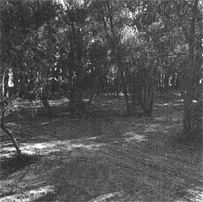

I-2 |
|
 Однако если бы Мадди и пытался получить приличное образование, на Юге это бы ему вряд ли удалось. Белые относились к вопросу об обучении чернокожих или равнодушно, или с откровенной враждебностью. Известно, что в Дельте школы для белых забирали львиную долю денег, выделенных на негритянские школы, которые получали списанную мебель и старые учебники. Администрация Кларксдэйла не считала нужным следить за тем, чтобы учителя в них имели высшее образование; многих учительниц подозревали в занятии проституцией. После восьмого класса идти было некуда: полная средняя школа для черных появилась в городе только в начале 50-х годов. В 20-х здесь планировали построить негритянский колледж, однако это вызвало недовольство местных плантаторов: они боялись, что благодаря открытию вуза в округе иссякнет источник дешевого труда. В результате колледж был переведен в Кливленд, куда жителю Кларксдэйла добраться было далеко не просто. Если так обстояли дела с образованием в соседнем городе, можно себе представить, что творилось на плантации, ведь доходы хозяина напрямую зависели от дикости и неграмотности арендаторов. Например, Джо Брант, который воспитывался вместе с Мадди, вообще нигде не учился. Плантационная школа обычно занимала одну комнату, где помещались все классы. Учебный год продолжался всего четыре-пять месяцев: когда начинались полевые работы, школу закрывали. Как говорил Мадди, "нас особо не учили: только подрастешь - и пора в поле". Несмотря на отсутствие образования, Мадди, по словам Уилли Морганфилда, обладал "недюжинным природным умом и здравым смыслом". Характер у него был легкий, он почти ни с кем не ссорился - кроме своего лучшего друга, тоже будущего блюзмена, Эдварда Райли Бойда(Ediie Boyd). Эдди был в родстве с семьей дяди Мадди Луи Морганфилда, жена которого приходилась матери Эдди двоюродной сестрой. Родился он 25 ноября 1914 года на ферме близ Стоволла, а рос на плантации, у деда. Эдди и Мадди познакомились в школе и вскоре стали закадычными друзьями, хотя и не могли обойтись без регулярных потасовок. Мадди был выше и сильнее, поэтому победа чаще оставалась за ним: "Да, он иногда колотил меня, но я никогда всерьез не обижался, - вспоминал Эдди. - Мы всегда дрались, но друг без друга не могли". В начале 20-х годов чернокожие жители Кларксдэйла, а вскоре и Стоволла, "заболели" бейсболом: игра давала им идеальную возможность отдохнуть, расслабиться и пообщаться. Мадди окунулся в нее с головой и подавал большие надежды, пока, к несчастью, не повредил себе палец. Мадди рос, но страсть к музыке не покидала его. Он мог часами колотить по жестянке из-под керосина, распевая загадочные куплеты вроде "I don't want no woman to chollyham my bone" (вариант перевода: "Не нужна мне такая женщина, что порубить мою кость на ветчину"), смысл которых был неясен ему самому как тогда, так и лет через пятьдесят. Затем кто-то подарил ему старый аккордеон. Заполучить настоящий инструмент было по тем временам большой удачей, и Мадди, скорее всего, честно пытался его освоить, но ничего не вышло. Он забросил аккордеон и принялся за варган - небольшую изогнутую пластинку, которую зажимали в зубах, дергая за прикрепленный к ней язычок - а к рождеству 1922 года уже мечтал о губной гармонике. Когда Санта Клаус, наконец, доставил обещанный подарок, Мадди был "счастлив, как никогда в жизни". Он не расставался с гармошкой ни на секунду, и Мисс Делла, которая терпела весь этот шум во время праздников, а потом потребовала тишины, просто-напросто спрятала ее. Мадди отыскал свой любимый инструмент месяца через два, и тут же вновь принялся исследовать его возможности. Учиться ему было не у кого - пришлось до всего доходить самому. К девяти годам Мадди уже вполне серьезно занялся гармошкой. Что он играл, в точности неизвестно, но, скорее всего, он подбирал носившиеся в воздухе мелодии: песни популярных ансамблей, полевые песни, церковные гимны и блюзы. К этому времени Эдди Бойд тоже взялся за гармошку, и друзья обменивались новыми приемами, а, возможно, и занимались вместе. Стремление Мадди овладеть инструментом уже тогда подпитывалось чем-то большим, чем просто любовь к музыке: в нем проснулось желание выдвинуться, выбиться в люди, завоевать себе более прочное положение. Еще не зная, как это сделать, он не переставал мечтать о будущем, какой бы глупостью ни казались мечты нищего чернокожего мальчика в краю, где царили эксплуатация и расизм: "Я думал об этом еще в те годы: хотел стать музыкантом или проповедником или еще кем-то, чтобы люди меня знали, - вспоминал Мадди. - Я всегда держал в голове: надо стать знаменитым - и делал все для этого. Я хотел стать знаменитым на весь мир и работал на это еще с тех пор, как был совсем мальчишкой". |
 |
{kind=link}